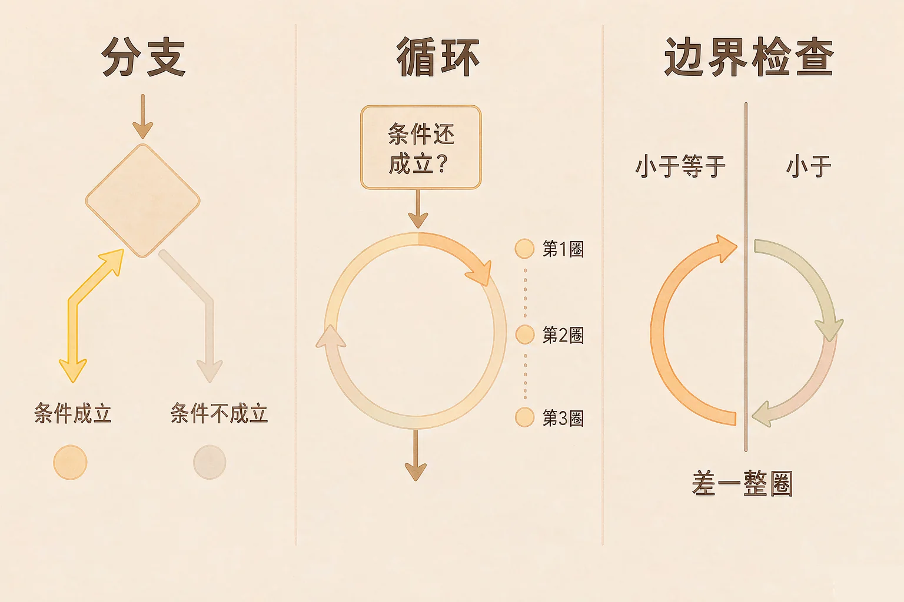
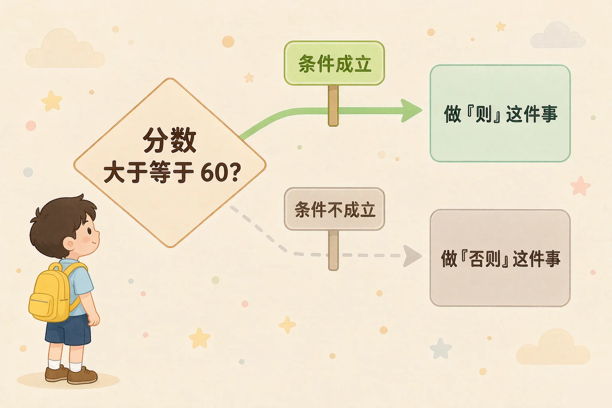
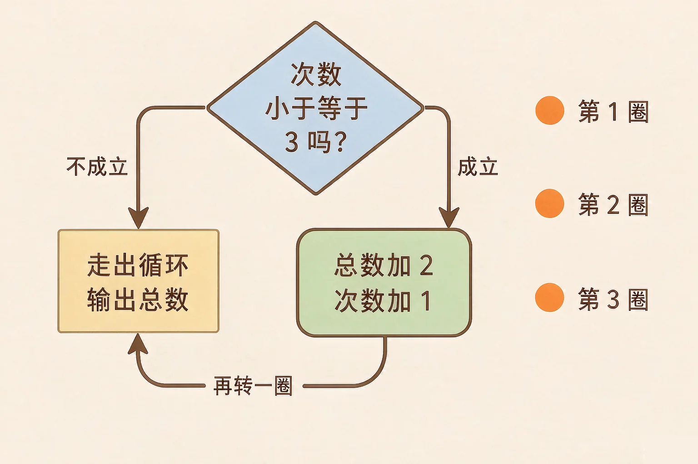

Gallery
v1.0.0 · skill v7.22.0
小学五年级 · 算法与程序
一张「下雨带伞、否则戴帽子」的便条里，藏着程序里最重要的两种走路方式——你分得清吗？

选一个你真正好奇的问题，后面的动手活动都会围着它转。
选择或输入后，这节课会围绕你的问题展开。
先凭直觉选一个，选完立刻看到解释——错了也没关系，正好知道要重点听哪里。
1. 程序里的「如果……则……否则……」，最后的执行方式是：
分支的本质就是一问两路，条件决定走哪一条，而且只走一条。错因提醒：常见错误是以为「否则」也要做一遍——其实它只是备用的那条路，条件成立时根本不会碰到它。
2. 写一个循环，下面哪一件事不做，程序就会一直转下去停不下来？
循环变量不变化，条件就永远成立，程序就出不来了。错因提醒：不少同学误认为循环只要写上「重复」两个字就够了——「什么时候停」和「每圈怎么变」才是关键。
3. 循环条件是「次数 ≤ 3」，次数从 1 开始。这个循环会转几圈？
次数依次是 1、2、3 时条件都成立，一共转 3 圈；到 4 才停下来。错因提醒：容易把「小于等于」当成「小于」来数，少算一圈；也容易把从 0 开始当成从 1 开始，多算一圈。
为什么要学这一课？
前面我们已经会让程序一行一行按顺序做事了（And）；可生活里的事常常要看情况——下雨才带伞，成绩够了才算及格，一句话说不清楚（But）；所以程序里要有一种会「自己挑路」的结构，那就是分支（Therefore）。
分支就是一问两路：先问一句能判真假的话，成立走一条，不成立走另一条。
① 条件能判真假
「分数 ≥ 60」这种话，要么成立，要么不成立，没有第三种。
② 成立走「则」
条件成立，就做「则」下面那件事，做完跳出去。
③ 两条只走一条
「否则」是备用路：成立时根本不碰它，不成立时才走。

把条件的方向写反：本来想说「分数不够就再练一练」，却写成「分数 ≥ 60 则再练一练」。条件本身没错，但它代表的意思反了。写完条件，一定要问自己一句：这句话成立的时候，我希望它做什么？
🔍 深层理解 换个角度再看一遍这件事，看看能不能说出背后的原理。
看见它：分支的样子就是岔路口的两块路牌。程序走到这里会停下来问一句，然后只往一个方向去。
解释它：为什么一定要「只走一条」？因为两条路做的事常常是互相矛盾的——既说及格又说没及格，那就乱套了。
迁移它：生活的规则大多是这个形状：如果体温超过三十七度三就报告老师，否则正常上课。看懂了形状，规则就好读了。
先选一个分数当输入，再点「单步执行」，一行一行看程序走。走到判断那一行，它会告诉你条件成立不成立。
先选一个分数，再点「单步执行」，看程序走哪一条路。
循环就是条件还成立，就再转一圈。写循环必须想清楚三件事，缺一件就会转不停。

分界线上的三个数，最容易骗人：
① 条件写「次数 ≤ 3」转 3 圈，写「次数 < 3」只转 2 圈——差一个符号，少一整圈。
② 起始值从 1 改成 0，同一个条件就会多转一圈。
③ 所以程序结果比预期差一点时，先回去看那个符号和那个起始值。
以为「条件不成立」就是出错。其实条件不成立只是该停了——它不是失败，而是循环正常的出口。真正的问题是条件永远成立：那才会让程序绕个不停。
下面是一段循环程序。起始值、比较符、上界都可以改。点「单步执行」，一次一行，看变量表怎么变、循环圈数怎么累加。
先点「单步执行」，看它一圈一圈怎么走。
题目：成绩依次是 72、45、88、60，要数出及格（≥ 60）的人数。程序是：① 及格人数 = 0 ② 次数 = 1 ③ 当 次数 ≤ 4 时 ④ 如果 成绩[次数] ≥ 60 则 ⑤ 及格人数 = 及格人数 + 1 ⑥ 结束分支 ⑦ 次数 = 次数 + 1 ⑧ 结束循环 ⑨ 输出 及格人数。结果是多少？
最容易忘的是第 ⑦ 步——把「次数 = 次数 + 1」忘在循环体外面，或者干脆漏掉。少了这一步，次数永远是 1，条件永远成立，程序就绕个不停。第二容易错的是把最后一个 60 分当成不及格：条件是「≥ 60」，60 正好算进去。
先凭直觉选一个，选完立刻看到解释——错了也没关系，正好知道要重点听哪里。
1. 「如果 分数 ≥ 60 则 说「及格」 否则 说「再练一练」」，当分数是 60 时，程序会：
≥ 的意思是「大于或等于」，60 正好等于 60，条件成立。错因提醒：常见错误是把 ≥ 和 > 搞混，以为必须超过才算——分界线上的那个数永远要单独试一次。
2. 循环条件是「当 次数 ≤ 5 时」，次数从 1 开始，每次加一。循环转几圈？
次数是 1、2、3、4、5 时都成立，共 5 圈；变成 6 时才停下来。错因提醒：把 ≤ 当成 < 就会少数一圈。数不清的时候，把次数一个个写下来最稳。
3. 写了一段循环，运行后程序一直没有停下来。最可能的原因是：
循环必须有出口：条件迟早要不成立。让循环变量每圈变化，才能走到那一步。错因提醒：别误认为「转不停」是电脑坏了——先回去看那三件事，特别是「每圈怎么变」。
这段程序把循环和分支叠在一起：一边数圈，一边在每一圈里判断这个成绩够不够 60。请点「单步执行」一行一行走完。
先点「单步执行」，看及格人数怎么从 0 变成 3。
走完以后说给同桌听：
把「≥ 60」改成「> 60」再走一遍，及格人数少了一个——少的那个是谁？为什么？如果把开始那句话改成「次数 = 0」，结果又会变成几个人？
先凭直觉选一个，选完立刻看到解释——错了也没关系，正好知道要重点听哪里。
1. 体温报警程序写的是「如果 体温 ≥ 37.3 则 报警 否则 正常」。体温正好 37.3 度时会：
≥ 包含等于，37.3 正好成立。错因提醒：现实里这类边界特别要紧，规则写 ≥ 还是 > 必须问清楚。
2. 跳绳计数程序是「当 天数 ≤ 3 时 加一次个数」，如果改成「当 天数 < 3 时」，会发生什么？
≤ 3 转 3 圈，< 3 只转 2 圈，正好少一天。错因提醒：常见错误是以为「小于」和「小于等于」差不多——它们差一整圈。
3. 一段循环程序每次的结果都比答案多一次，你最该先检查的是：
多一次或少一次，几乎都出在分界线上：符号和起始值。错因提醒：别急着重写——先动那一个符号、那一个数，然后重新运行一次验证。
回到开头那张便条：下雨带伞、否则戴帽子——这是分支；每天早上看一眼天气预报，一直看到出门为止——这是循环。程序世界里最常出现的两种走路方式，你今天都认出来了。
给别人讲一遍：请用「条件、两条路、只走一条」说清楚什么是分支；再用「开始、停、变化」说清楚循环要注意什么。
再动一动手：画出来——在纸上画一个循环的圈，把「成立就回去、不成立就出去」两个箭头都标上去。
三层练习，做完第一、二层就算通关；第三层留给愿意继续探索的同学。
⭐ 基础巩固（必做）
⭐⭐ 能力应用（必做）
⭐⭐⭐ 迁移挑战（选做）
左边是学它之前要先会的，右边是学会之后可以继续探索的，下面是同一领域的伙伴知识。
图谱正在加载：首次进入需下载知识索引（约 1–3 秒），加载完成后本行会自动消失。